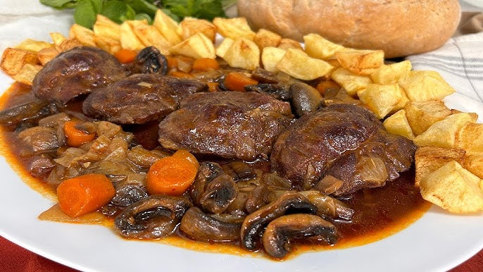

Carrillada en salsa
Esa carne melosa, que se deshace en la boca, se impregna de una salsa rica y llena de matices.
Ideal para los días en los que apetece un plato reconfortante, la carrillada de la abuela es sinónimo de hogar y tradición. Acompañada de unas patatas fritas caseras, se convierte en un festín que hará que todos pidan repetir.
Recomendación
El plato sabe aún mejor al día siguiente, cuando la salsa se ha asentado bien. ¡Que aproveche! 😋
Ingredientes
- 1 kg de carrilleras de cerdo
- 2 cebollas grandes
- 2 zanahorias
- 3 dientes de ajo
- 2 tomates maduros
- 1 hoja de laurel
- 1 vaso de vino tinto (250 ml)
- 1 vaso de caldo de carne (250 ml)
- 1 cucharada de pimentón dulce
- Harina (para enharinar la carne)
- Aceite de oliva virgen extra
- Sal y pimienta al gusto
Preparación
- Preparar las carrilleras:
- Limpia bien las carrilleras, quitando el exceso de grasa si es necesario.
- Salpimienta la carne y pásala ligeramente por harina, sacudiendo el exceso.
- Dorar la carne:
- En una olla grande o cazuela con un buen chorro de aceite de oliva, dora las carrilleras a fuego medio-alto hasta que estén bien selladas por ambos lados.
- Retíralas y resérvalas.
- Pochar las verduras:
- En la misma cazuela, añade un poco más de aceite si es necesario y sofríe la cebolla y el ajo picados hasta que estén dorados.
- Agrega la zanahoria en rodajas y cocina unos minutos más.
- Añade el tomate rallado y el pimentón, removiendo bien.
- Cocción con el vino y el caldo:
- Vuelve a introducir las carrilleras en la cazuela.
- Vierte el vaso de vino tinto y deja que se evapore el alcohol (unos 5 minutos a fuego fuerte).
- Añade el caldo de carne y la hoja de laurel.
- Cocinar a fuego lento:
- Tapa la cazuela y deja cocinar a fuego lento durante 1 hora y media - 2 horas, removiendo de vez en cuando.
- Si usas olla exprés, reduce el tiempo a unos 40-45 minutos desde que empieza a soltar vapor.
- Finalizar la salsa:
- Una vez tiernas, saca las carrilleras y tritura la salsa con una batidora para que quede espesa y suave.
- Vuelve a poner la carne en la salsa y deja cocinar a fuego bajo 5 minutos más.